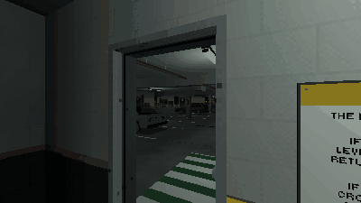

Tutorials › Draw Anomalies Without Repeats
How to Draw Anomalies Without Repeats in Godot 4
Which anomaly a level shows: none twice before all have come, the obvious ones early, the subtle ones late.

The draw of an anomaly game: which anomaly, if any, a level shows. No anomaly comes twice before every one has come once (a bag that refills only when it is empty, and never with the anomaly just shown), each is picked by its weight, and a ramp makes the obvious ones likelier early in a run and the subtle ones deeper down. The run's first level is always clean, so the player learns the level before anything on it changes.
Script: anomaly_draw.gd (MIT) · Godot 4.3 or newer · its folder on GitHub
How to use it
- Copy
anomaly_draw.gdinto your project and make a draw for your loop:const Draw = preload("res://anomaly_draw.gd"), thenvar draw = Draw.new(). - Fill
draw.anomalieswith your anomalies: anything with anid, atier("S" subtle, "N" noticeable, "O" obvious) and aweight, such as your anomaly nodes, or the script's own class:Draw.Anomaly.new("tyre", "S", 1.0). - Set
start_levelandgoal_levelto your run (it counts down from the start level to the way out) andclean_chance; seeddraw.rngfor a run that repeats. - Call
start_run()when a run starts, anddraw(level)for each level: it gives the anomaly to show there, ornullfor a clean level.
What it needs
- Only your anomalies, each with an
id, atierand aweight: the draw is plain GDScript, with no scene or file of a pack.
Try it free
The Liminal PSX Parking Anomalies Free Sampler has the looping car park and the pack's loop game, which draws its five anomalies this way on a run of three levels (it also keeps the bag across runs and saves it with the run).
How it was tested
In Godot 4.3 and 4.7.2, on stand-in anomalies of the three tiers: a run's first level is clean; no anomaly comes twice before every one has come once, and the refilled bag never starts with the one just shown; an anomaly of weight 0 never comes; clean levels come at clean_chance; the ramp makes obvious anomalies likelier on the first levels and subtle ones on the last; a seed repeats a run exactly.
The code
extends RefCounted
## How to Draw Anomalies Without Repeats in Godot 4
## Cordatix Godot 4 PSX tutorials, MIT licensed: https://github.com/GoldenSparrow-Dev/cordatix-godot-psx-tutorials
## The devlog: https://cordatix.itch.io/liminal-psx-parking-anomalies/devlog/1731759/how-to-draw-anomalies-without-repeats-in-godot-4-liminal-psx-parking-anomalies
## An anomaly game's draw: each level is clean or has one anomaly. No anomaly comes twice before every one has come
## once (a bag that refills only when it is empty, never with the one just shown), each is picked by its weight, and
## a ramp makes the obvious ones likelier early in a run and the subtle ones deeper down. The run's first level is
## always clean, so the player learns the level before anything changes on it.
## `anomalies` holds anything with an `id`, a `tier` ("S" subtle, "N" noticeable, "O" obvious) and a `weight`: your
## anomaly nodes, or the Anomaly class below.
class Anomaly:
var id := ""
var tier := "N"
var weight := 1.0
func _init(p_id: String, p_tier := "N", p_weight := 1.0) -> void:
id = p_id
tier = p_tier
weight = p_weight
var anomalies: Array = []
## The chance a level after the first is clean.
var clean_chance := 0.3
## The run goes from start_level down to goal_level (the way out).
var start_level := 6
var goal_level := 0
var rng := RandomNumberGenerator.new()
var _bag := {} # the ids drawn since the bag was last full
var _first := true
var _last = null # the anomaly drawn last
## A new run. The bag carries on, so a replay meets the anomalies the last run did not show first.
func start_run() -> void:
_first = true
## The anomaly for this level, or null for a clean level.
func draw(level: int):
if _first:
_first = false
return null
if rng.randf() < clean_chance:
return null
var cands := []
for a in anomalies:
if a.weight > 0.0 and not _bag.has(a.id):
cands.append(a)
if cands.is_empty():
_bag.clear() # every one has come: refill the bag, but not with the one just shown
for a in anomalies:
if a.weight > 0.0 and a != _last:
cands.append(a)
if cands.is_empty():
return null
# a weighted pick: each candidate takes its share of the line, weight times its tier's ramp here
var weights: Array[float] = []
var total := 0.0
for a in cands:
var w: float = a.weight * ramp(a.tier, level)
weights.append(w)
total += w
var r := rng.randf() * total
var pick = cands[cands.size() - 1]
for i in cands.size():
r -= weights[i]
if r <= 0.0:
pick = cands[i]
break
_bag[pick.id] = true
_last = pick
return pick
## A tier's weight on this level, on a ramp from the start level to the last level before the way out: an obvious
## anomaly from 2 down to 0.5, a subtle one from 0.15 up to 1.5, a noticeable one 1 all the way.
func ramp(tier: String, level: int) -> float:
var t := clampf(float(start_level - level) / maxf(1.0, float(start_level - goal_level - 1)), 0.0, 1.0)
match tier:
"O":
return lerpf(2.0, 0.5, t)
"S":
return lerpf(0.15, 1.5, t)
return 1.0
The devlog and the pack
The step-by-step walkthrough is the devlog How to Draw Anomalies Without Repeats in Godot 4 (Liminal PSX Parking Anomalies) on itch.io, written for Liminal PSX Parking Anomalies, a PS1-style asset pack by Cordatix for Godot 4, Unity, Unreal and Blender.